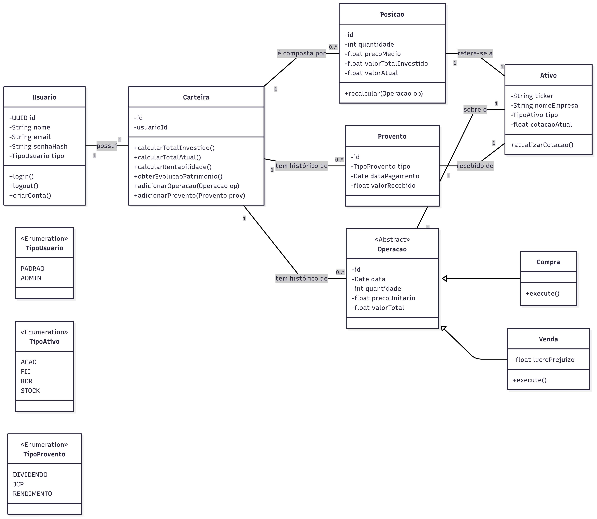
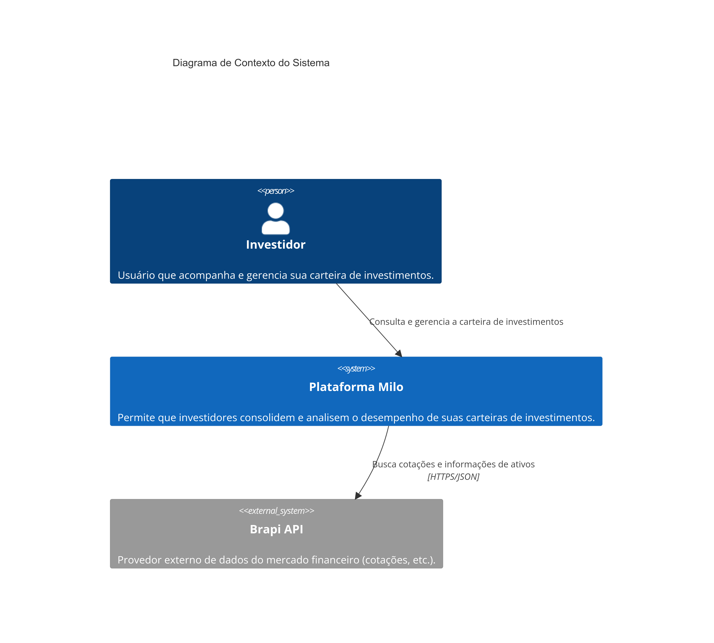
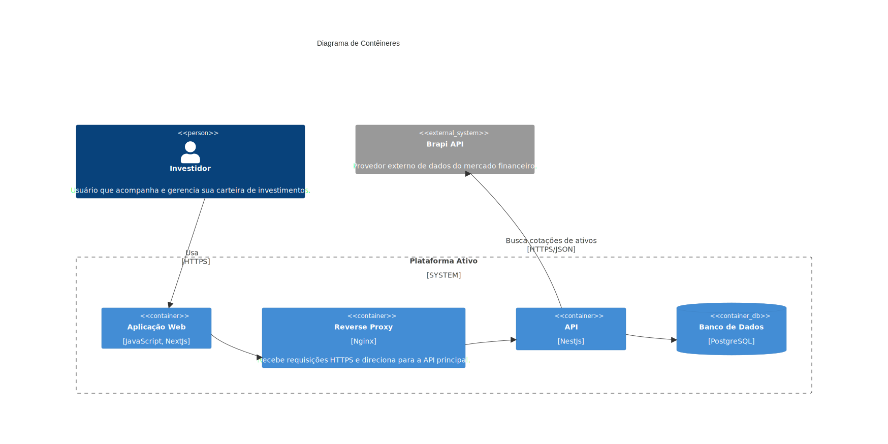

Arquitetura do Projeto¶
Bem-vindo à seção de Arquitetura do projeto Milo Invest.
O objetivo aqui é fornecer uma visão de alto nível sobre a estrutura técnica da plataforma, as tecnologias utilizadas e as decisões de design que guiam o desenvolvimento.
Seguindo a filosofia de uma documentação ágil, focaremos em diagramas e descrições concisas. Este documento deve servir como um guia rápido para facilitar o onboarding de novos desenvolvedores e alinhar a equipe sobre os padrões adotados.
Diagrama de Classes¶

O diagrama acima representa o núcleo do domínio da aplicação, modelando como a carteira de um investidor é estruturada e gerenciada.
A entidade central é a Carteira, que pertence a um Usuario. A Carteira é composta por um conjunto de Posicao, que representa a consolidação de um ativo específico na carteira (ex: 100 ações de PETR4 com um certo preço médio). Cada Posicao se refere a um Ativo, que contém as informações descritivas do papel (ticker, nome da empresa, etc.).
O histórico de transações é modelado através da classe abstrata Operacao (com suas especializações Compra e Venda) e da classe Provento. Estes eventos são utilizados para criar e recalcular o estado de cada Posicao.
Este modelo permite um registro transacional completo do histórico do usuário, enquanto mantém uma visão consolidada e sempre atualizada da sua carteira.
Diagramas de Arquitetura (C4 Model)¶
Para documentar a arquitetura da plataforma Ativo, utilizamos uma abordagem baseada no C4 Model. Este modelo foi criado para descrever a arquitetura de software em diferentes níveis de abstração (Contexto, Contêineres, Componentes e Código), tornando-a compreensível tanto para equipes técnicas quanto para stakeholders de negócio.
Nesta seção, apresentamos os dois primeiros e mais altos níveis de abstração: o Diagrama de Contexto (Nível 1) e o Diagrama de Contêineres (Nível 2).
Nível 1: Diagrama de Contexto do Sistema¶
O Diagrama de Contexto é a visão mais ampla do sistema. Ele mostra como a nossa plataforma se encaixa no mundo, quem são seus usuários e com quais outros sistemas ela interage. Ele não revela tecnologias ou detalhes de implementação.

Nosso sistema, a Plataforma Ativo, está no centro. Ele interage com duas entidades principais:
- Investidor (Pessoa): O usuário final da nossa plataforma. Ele utiliza o sistema para consultar e gerenciar sua carteira de investimentos.
- Brapi API (Sistema Externo): Um sistema externo que atua como nosso provedor de dados do mercado financeiro. Nossa plataforma consome esta API para buscar cotações e informações atualizadas sobre os ativos.
Nível 2: Diagrama de Contêineres¶
O Diagrama de Contêineres aproxima o zoom para dentro dos limites do nosso sistema, mostrando os principais blocos de construção tecnológicos que o compõem. Cada "contêiner" representa uma aplicação ou um repositório de dados que pode ser executado de forma independente (como um serviço de backend, um frontend web ou um banco de dados).

A Plataforma Ativo é composta pelos seguintes contêineres:
-
Aplicação Web (Frontend): Construída com Next.js, é a interface com a qual o Investidor interage. É responsável por toda a experiência do usuário e se comunica com a nossa API principal via HTTPS.
-
Reverse Proxy (Nginx): Atua como a porta de entrada para o nosso sistema. Ele recebe todas as requisições da Aplicação Web, gerencia o tráfego e as direciona para a API, adicionando uma camada de segurança e flexibilidade.
-
API (Backend): O cérebro do nosso sistema, desenvolvido em NestJS. Contém toda a lógica de negócio, como gerenciamento de usuários, carteiras e operações. É responsável por persistir os dados no banco e por buscar informações externas na Brapi API.
-
Banco de Dados (PostgreSQL): Nosso contêiner de armazenamento. É um banco de dados relacional PostgreSQL que persiste todas as informações dos usuários, suas carteiras, ativos e histórico de operações.